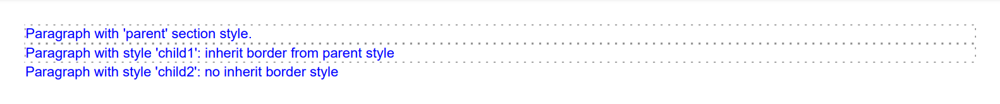

Formatting and Styles
Brief
The article describes how to configure the formatting of a document.
Details
Formatted Elements and Containers
A document can contain a number of elements that have their own formatting - formatted elements. Examples of formatted elements are a paragraph, an image, a line. Each formatted element has default formatting stored in the corresponding default style.
The elements of a document that can contain other elements are called containers. They can also be contained in other containers or contain other containers. For example, a document itself is a container - it contains sections, sections are also containers - they can contain paragraphs, tables, images, etc.
One element can be a container and a formatted element at the same time. For example, a paragraph - it has its own formatting and can contain other formatted elements.
A full list of formatted elements and containers in a document structure [show]
You can configure the formatting of a document in two ways:
Format an element directly
Create a style and apply it to formatted elements or containers:
2.1. Apply the style to a number of formatted elements of the same type
2.2. Apply the style to all formatted elements of the same type in a container
2.3. Apply the style to all formatted elements in a container
Note: The library allows you to apply a style to an element and then format the element directly, if necessary. Applying a style to an element after formatting it directly is not allowed.
When you do not apply a style to the document elements, each element will have the formatting settings defined by this element's default style.
You can create a style based on the default styles from the library StyleSheet or create a completely new
style using the method StyleBuilder.New().
When you apply a style to an element, the element will have the formatting settings defined by the applied style.
1. Format an element directly
Formatting of an element is configured by methods of its builder.
For example, to set the following formatting: bold, font size 4, horizontally centered, top and bottom margins of 20 points -
you can call the following ParagraphBuilder methods:
myParagraph.SetBold().SetFontSize(14).SetMarginTop(20).SetMarginBottom(20).SetHorizontalAlignment(HorizontalAlignment.Center);Some methods allow you to set the formatting when adding an element, for example, you can use the
AddLine method to add a line with the length 200 points, width 1 point, dashed, and blue:
mySection.AddLine(200, 1, Stroke.Dashed, Color.Blue);2. Create a style
It may be inconvenient to format elements directly when you need to use the same formatting for a number of formatted elements in a document.
In this case, you can create a style and then apply it to the necessary elements or containers.
For example, you can create a style as follows:
var paragraphStyleHeader1 = StyleBuilder.New().SetFontBold().SetFontSize(14).SetMarginTop(20).SetMarginBottom(20).SetHorizontalAlignment(HorizontalAlignment.Center);2.1. Apply the style to a number of formatted elements of the same type
If you need to use the same formatting for a number of formatted elements of the same type, you can apply the same style to these elements.
For example, you can apply the created style to each paragraph that you need to make a heading:
var chapterOneHeader = ParagraphBuilder.New().ApplyStyle(paragraphStyleHeader1);2.2. Apply the style to all formatted elements of the same type in a container
If you need to apply the same style to all formatted elements of the same type in a container, you can apply the style on the corresponding level.
You can set a paragraph, image, line, and table style for a whole document, section, or repeating area.
For example:
To horizontally center all images in a section, you can apply the following style to all images on the section level by
using the SectionBuilder.SetImageStyle method:
mySection1.SetImageStyle(StyleBuilder.New().SetHorizontalAlignment(HorizontalAlignment.Center));To set the font size and color for all tables in the document, you can apply the following style to all tables on the document level by
using the DocumentBuilder.SetTableStyle method:
myDocument.SetTableStyle(StyleBuilder.New().SetFontSize(8).SetFontColor(Color.Blue));To set the background color for all paragraphs in repeating areas, you can apply the following style to all paragraphs on the repeating area level by
using the RepeatingAreaBuilder.SetParagraphStyle method:
myHeader.SetParagraphStyle(StyleBuilder.New().SetBackColor(Color.Gray));Note that if you set a style for an image on a container level, this style will be applied both to images and inline images.
2.3. Apply the style to all formatted elements in a container
A style can be applied to all formatted elements in a container.
For example, to set the top margin of 20 points for all formatted elements of a section, you can apply the following style on the section level
by using the SectionBuilder.ApplyStyle method:
mySection1.ApplyStyle(StyleBuilder.New().SetMarginTop(20));Inheritance of Styles
Styles can be inherited. You can create a new style based on an existing style, including the default style, by changing the necessary
formatting parameters. If any parameters are not specified in the new style, the corresponding parameters of the parent style are used.
If these parameters are not specified in the parent style and it has a parent style - its parameters are used, and so on until there is no
other parent style. In this case the default values of these parameters are used.
For example,
var myDocumentStyle = StyleBuilder.New().SetFontSize(12).SetLineSpacing(2);
var myHeader1Style = StyleBuilder.New(myDocumentStyle).SetFontBold().SetFontSize(14).SetMarginTop(10).SetMarginBottom(10);
...
mySectionBuilder.AddParagraph(...).ApplyStyle(myHeader1Style);The paragraph will have the font bold, size 14, top and bottom margins - 10, and line spacing 2.
Not all formatting parameters are inherited automatically. For the following parameters, it is necessary to specify whether they should be inherited from the parent style or their default values should be used if their values are not specified in a style:
Borders
Margins
Paddings
KeepWithNext
PageBreak
BackColor
ListStyle (ListBullet, ListNumbered)
ListLevelLeftIndent
For example,
var myHeader2Style = StyleBuilder.New(myHeader1Style).SetFontColor(Color.Blue).SetMarginTop(Inherit.Parent).SetMarginBottom(Inherit.Parent);Note that borders, margins, and paddings are never inherited for a paragraph.
Defining the Final Values of Element Formatting Parameters
The final values of element formatting parameters in a document are defined based on the styles and formatting applied to them on different levels as illustrated in the following diagram.
Examples
Example 1. Apply a style to a paragraph [hide]
//Create a style:
var styleHeader = StyleBuilder.New()
.SetFontName(FontNames.Helvetica)
.SetFontSize(16)
.SetFontBold()
.SetHorizontalAlignment(HorizontalAlignment.Center);
//Create a document:
DocumentBuilder.New()
//Add content and apply the style to the paragraph:
.AddSection().AddParagraph("Header").ApplyStyle(styleHeader)
//Build a file:
.ToDocument().Build("Result.pdf");
The above code will generate the following:
See the documentExample 2. Apply a style to a document [hide]
//Create a style:
var styleMain = StyleBuilder.New()
.SetFontName(FontNames.Helvetica)
.SetFontSize(12);
//Apply the style to the document:
DocumentBuilder.New().ApplyStyle(styleMain)
//Add content:
.AddSection()
.AddParagraphToSection("Document font style paragraph:")
.AddParagraphToSection("Helvetica 12")
//Build a file:
.ToDocument().Build("Result.pdf");
The above code will generate the following:
See the documentExample 3. Apply styles to a document and to its sections [hide]
//Create styles for a document and for a paragraph:
var styleMain = StyleBuilder.New()
.SetFontName(FontNames.Helvetica)
.SetFontSize(12);
var styleHeader = StyleBuilder.New(styleMain)
.SetFontSize(14)
.SetHorizontalAlignment(HorizontalAlignment.Center);
//Apply the style to the document:
DocumentBuilder.New().ApplyStyle(styleMain)
//Add content:
.AddSection()
//Apply the style to the paragraph:
.AddParagraph("Header").ApplyStyle(styleHeader).ToSection()
//Add paragraphs:
.AddParagraphToSection("Document font style paragraph:")
.AddParagraphToSection("Helvetica 12")
//Build a file:
.ToDocument().Build("Result.pdf");
The above code will generate the following:
See the documentExample 4. Apply styles to sections [hide]
//Create styles:
var styleSection = StyleBuilder.New()
.SetFontName(FontNames.Helvetica)
.SetFontSize(14);
var styleAddition = StyleBuilder.New(styleSection)
.SetFontColor(Color.Blue)
.SetFontOblique();
//Create document:
var document = DocumentBuilder.New();
//Add section1 with the first style:
var section1 = document.AddSection().ApplyStyle(styleSection);
section1.AddParagraphToSection("Section font style paragraph:")
.AddParagraphToSection("Helvetica 12");
//Add section2 with the second style:
var section2 = document.AddSection().ApplyStyle(styleAddition);
section2.AddParagraphToSection("Addition info font style paragraph:")
.AddParagraphToSection("Helvetica oblique");
//Build a file:
document.Build("Result.pdf");
The above code will generate the following:
See the documentExample 5. Apply a style to all images in a section [hide]
var imagePath = "imageFile.png";
//Create a style for images:
var styleImage = StyleBuilder.New()
.SetBorder(0.75f, Stroke.Solid, Color.Blue)
.SetMarginTop(5f).SetMarginBottom(5f);
//Create a document:
DocumentBuilder.New()
//Add a section with the style for images:
.AddSection().SetImageStyle(styleImage)
//Add content:
.AddParagraphToSection("Document with content misc. types")
.AddImageToSection(imagePath, 48, 48)
.AddParagraphToSection("Setup style for all images in section: blue border and margins.")
.AddImageToSection(imagePath, 48, 48)
//Build a file:
.ToDocument().Build("Result.pdf");
The above code will generate the following:
See the documentExample 6. Apply styles with inheritance of parameters [hide]
var imagePath = "imageFile.png";
//Create a style:
var styleParent = StyleBuilder.New()
.SetFontColor(Color.Blue)
.SetBorder(0.75f, Stroke.Dotted, Color.Gray);
var styleChild1 = StyleBuilder.New(styleParent)
.SetBorder(Inherit.Parent);
var styleChild2 = StyleBuilder.New(styleParent);
//Create a document:
DocumentBuilder.New()
//Add a section with the style for all paragraphs in the document:
.AddSection().SetParagraphStyle(styleParent)
//Add content:
.AddParagraphToSection("Paragraph with 'parent' section style.")
.AddParagraph("Paragraph with style 'child1': ")
.ApplyStyle(styleChild1)
.AddTextToParagraph("inherit border from parent style")
.ToSection()
.AddParagraph("Paragraph with style 'child2': ")
.ApplyStyle(styleChild2)
.AddTextToParagraph("no inherit border style")
//Build a file:
.ToDocument().Build("Result.pdf");
The above code will generate the following:

See the document